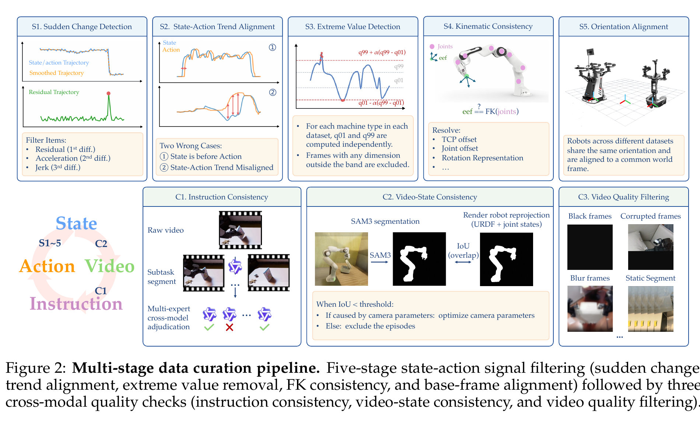

你们现在的质检做到了哪里？
和 Qwen-RobotManip 逐步骤对照
先分清：文件“没坏”，不等于机器人动作“有同一个物理含义”
你们的质检已经是很扎实的数据完整性 + 时序连续性 + 视频可用性审计。Qwen 的流程与它高度重叠，但又额外检查了 action/state 的因果关系、运动学、坐标系和语言-视频一致性。两者都不能仅靠格式证明“不同来源都已统一成 G1+Wuji 的正确物理语义”。
你们当前 audit 在回答
文件、Parquet、时间戳、mask、state/action 是否可读取且连续？视频是否冻结、黑屏、损坏或明显失焦？
仍未由它回答
body29 顺序、root3 单位、hand20 手型、action frame、retarget/IK 是否跨数据集有同一物理意义？
LeRobot v3 是一个数据容器；110D/136D 是固定张量形状；quality pipeline 是质量审计。三者都不是“自动证明语义正确”的机制。语义正确需要 metadata、转换脚本、FK/重投影和样本可视化共同给证据。
展开原文 · Qwen 为什么要多阶段清洗
“Aggregating manipulation data across diverse embodiments, simulators, and collection pipelines introduces heterogeneous noise in recorded state and action signals.”
你们当前的流水线：先把“可训练的坏文件”挡在训练外面
上一节区分了质量与语义。这一节先不谈论文，严格按你们现有脚本还原：它从 dataset 入口出发，按 episode 分片，分别检查结构、连续信号和视频，最后只生成 keep / review / exclude 建议，不会改数据。下一节才问它和论文的信号检查哪里相同、哪里还差一层。
meta/info.json、episodes.parquet、shard 与视频是否存在。critical/high→exclude；medium→review；汇总 CSV/JSONL。2.1 分片并不是“随便拆任务”
设共有 $N$ 个 episode、分成 $P$ 个 partition，第 $i$ 个 Slurm array task 处理：
- $N$
episodes.parquet的 episode 总行数。- $P$
- 提交时指定的 partitions 数；不同数据集现在用 4–32。
- $[start_i,end_i)$
- 第 $i$ 个 job 的闭开区间。按 metadata 行均分，所以不会漏 episode 或重复审计。
每个 part 还写 manifest，记录数据 root、范围、阈值、camera/video mode 和完成时间；summary job 依赖 array job 全部成功。这是一个很好的可复现性设计：之后看到某个 exclude，可以追到当时用了什么阈值和哪一段输入。
2.2 结构检查在保护什么？
| 检查 | 你们的判据 | 它防止什么 | 它不能证明什么 |
|---|---|---|---|
| 时间轴 | frame index 严格为 $0,1,2,\ldots$；timestamp 单调，间隔接近 $1/fps$，容差 2 ms。 | 丢帧索引、乱序、明显时钟损坏。 | state 和 action 是不是同一时钟或有合理控制时延。 |
| 张量/掩码 | states/action 存在；无 NaN/Inf；mask shape 合法。 | 坏 shard、损坏数值、读入时 shape 崩溃。 | mask 的 True/False 是否真的代表对应自由度有效。 |
| episode 边界 | metadata length 等于 shard 切出的 row 数；episode index 不重复。 | 切片错位、重复训练、缺 episode。 | 一段 episode 在物理上是否完成了对应任务。 |
信号检查：你们先抓“突变”，Qwen 再追问“它是否违反物理因果与几何”
你们已经保证 episode 结构正确；下一层是序列是否可信。当前 audit 用稳健统计找每维的突变，并且对标为 next 的来源检查“action 下一帧是否成为 state”。Qwen 的 S1 与此相近，但它用平滑残差、加速度、jerk 联合判定；更重要的是 S2 把控制命令应领先状态响应作为因果不变量来检查。后面 S3–S5 则专门解决范围、运动学和坐标系问题。
3.1 你们当前的 jump detector：对每维变化幅度做稳健阈值
对某个有效维度 $x_t$，先计算帧间绝对变化 $d_t=|x_t-x_{t-1}|$。用中位数而非均值，是为了让少数极大跳变不会反过来把阈值抬高、躲过检测：
- $x_t$
- 某一个有效 state/action 维度在第 $t$ 帧的值。mask 为 invalid/padding 的维度不参与统计。
- $d_t$
- 当前帧相对上一帧跳了多远；它没有正负方向，只看幅度。
- $m$
- 典型帧间变化大小。比均值更不怕极端离群点。
- $MAD$
- 变化幅度围绕中位数的典型偏离；为正态分布乘 $1.4826$ 可近似标准差尺度。
- $m+12\sigma_{robust}$
- “比这条轨迹平常变化大很多”的自适应门槛。$12$ 很保守，降低正常快速动作被误报的风险。
- $\tau_{\min}$
- 当一条轨迹几乎静止，$MAD$ 会很小；固定下限避免微小数值噪声也被当成 jump。
- max jump / ratio
- 脚本还会记录最大 jump、所在 frame/dim、超阈值比例、最长静止时长和有效维数。当前 body/hand/root 的 jump 都是 medium/review，不是自动 exclude。
坏 shard 拼接、单位突然切换、某一帧状态爆掉、复制/粘贴错位。它刻意不检查 action[0:64] 的 SONIC token，因为 token 本身是离散表示；把它按连续关节差分会误报。二值 gripper 也应按同一原则豁免。
3.2 Qwen S1：不只看 $|\Delta x|$，还要求“偏离平滑趋势 + 动力学突变”同时成立
论文没有公布固定数值阈值，但给了判定结构：先用级联 median filter 和 Savitzky–Golay 得到平滑趋势 $\tilde{x}_t$，再联合残差、二阶差分和三阶差分。下面是对论文文字的等价操作化写法，不是论文逐字列出的公式：
- $r_t$ 残差
- 当前点离“这段动作原本的平滑走向”有多远。它可以抓异常尖刺，而不把正常缓慢漂移直接判坏。
- $a_t$ acceleration
- 一阶速度是否突然改变。持续匀速移动的 $a_t$ 小；突然急刹或暴冲时它大。
- $j_t$ jerk
- 加速度又是否突然改变，专门对极尖的瞬态敏感。
- 联合条件
- 论文的语义是 $r_t>\tau_r$ 且 $(a_t>\tau_a\ \text{或}\ j_t>\tau_j)$ 才 flag。比只用 $|\Delta x|$ 更能把“慢漂移”与“突然损坏”分开。
Qwen 的阈值按数据集、本体、真实/仿真、base mobility、旋转表示分别设定；后续动作可以是删帧或丢 episode。你们当前的统一 robust threshold 是很好的 v1，但并没有这层“趋势残差 + 高阶变化”的交叉确认。
3.3 你们的 next-state check 与 Qwen S2：一个是精确契约，一个是跨设备因果检查
你们：适用于明确标了 next 的来源
当 episode metadata 的 body_source/hand_source 包含 next 时，检查 $a_t^{body}\approx s_{t+1}^{body}$ 与 $a_t^{hand}\approx s_{t+1}^{hand}$，容差 $10^{-3}$。它能非常准确地抓到“本应是 next joint target，但写错帧/错值”的样本。
它不能泛化到所有 action 表示
absolute target、delta action、低层 torque、带控制延迟的真机日志，未必满足 $a_t=s_{t+1}$。若对它们硬套等式，会把合法控制系统误判坏数据。
Qwen S2 的问题更宽：不要求 action 值等于未来 state，而问action 的变化是否在合理时间后引出同向 state 变化。论文先平滑 state/action，针对 shared joint dimension 用 cross-correlation 找最佳 lag；若是 delta action，先积分回绝对量。
- $\Delta a_t,\Delta s_t$
- action/state 的一阶变化，而不是绝对位置。这样不会被初始关节偏置干扰。
- $\hat\ell$
- 最匹配的时延。合理系统通常 action 领先 state，所以最佳 $\ell$ 应落在预期控制延迟范围。
- $\operatorname{DA}$
- Directional Agreement：最佳对齐后，二者“同向变化”的比例。低于约 0.6–0.7，论文将维度/episode flag 并排除。
- 与 next-state 的关系
next检查是一个强而窄的特例；S2 是较弱但更通用的因果趋势检查。
3.4 Qwen S3–S5：当前流程还没有的“语义与几何”三层
| 论文阶段 | 具体做什么 | 公式/判据 | 你们当前状态 |
|---|---|---|---|
| S3 Extreme value | 每个本体、每个维度估计分位数范围，防极端值污染后续归一化；gripper 因双峰分布豁免。 | 超出 $[q_{01}-\alpha(q_{99}-q_{01}),\;q_{99}+\alpha(q_{99}-q_{01})]$ 删帧。 | 缺当前有 jump，但没有 per-embodiment 的绝对范围/单位审计。 |
| S4 FK consistency | 从 URDF + joints 用 Pinocchio 算末端位姿，与日志 EEF 比较；优先修 TCP、joint sign、rotation/base frame。 | $T^{FK}_{eef}(q_t)\stackrel{?}{\approx}T^{log}_{eef,t}$ | 缺当前没有把 body29/hand20 的物理语义接回 URDF 验证。 |
| S5 Orientation alignment | 给每个数据集施加旋转修正，使 world forward 与 EEF 朝向约定一致。 | $R'_{world}=R_{corr}R_{world}$ | 缺当前不会验证 root3 的单位、yaw wrap 或 world/base frame。 |
S4 的关键不是“发现不一致就删除”。论文明确说它主要用于修正：固定 TCP offset、joint sign、肩部相对双臂 pose 到 world frame 的转换。对你们而言，这一层正是从“格式统一”走向“语义可证”的入口。
视频检查：你们的 C3 已很具体；Qwen 再补 C1 语言与 C2 机器人重投影
上一节的 S1–S5 都在看数值。可 VLA 最终同时看图、读指令、输出动作：画面冻结而 action 在变、视频中的机器人与 state 对不上、文本写“拿杯子”但视频在推盒子，都会让训练目标互相矛盾。你们现有视频审计已经很接近 Qwen C3，下一步最有价值的是把“视频-状态”和“语言-视频”也拉进同一个证据链。

4.1 你们已有的 C3：冻结不是一个二元标签
当前 primary/all camera 检查文件可解码、帧数、FPS、黑/白帧、blur proxy、近重复帧及跨 episode 指纹。冻结判定用相邻缩小灰度帧的 MAE：
- $I_t$
- 第 $t$ 帧缩小后的灰度图。阈值很小表示视觉几乎没有变化。
- 持续时间
- 连续达到 2 s 为 long freeze，达到 5 s 为 severe freeze。
- video 静止 + action 变化
- 2–5 s 标 high；$\ge5$ s 标 critical。因为模型看到的是旧画面，却被要求输出不断变化的动作，监督互相矛盾。
- video/action 都静止
- 当前只标 medium/review。它可能是 episode 边界的冗余段，也可能是视觉变化小但语义重要的夹爪闭合，不能一刀切删除。
这和 Qwen C3 的原则一致：黑、坏、模糊、长静止段要清，但 task-critical 的视觉微小变化（论文举例夹爪闭合）要保留。差别是你们把 freeze 的数值阈值和严重度规则写得更明确；Qwen 描述的是方法类别，没有公开它的黑帧、模糊、静止阈值。
4.2 Qwen C1：语言不是附属字段，也要与行为核对
4.3 Qwen C2：机器人应该在视频里的哪里？
这是当前质检与“语义质检”之间最关键的一道桥。若有相机内外参、URDF、关节 state，先把机器人渲染到图像平面得到 $M^{render}$；再把视频中的真实机器人分割成 $M^{seg}$；然后比较交并比：
- 高 IoU
- 视频里看到的机器人轮廓，和记录的 joint state + 相机几何预测的位置一致；这是“state 看起来可信”的强证据。
- 低 IoU
- 可能是 joint/state 错、时间偏移、URDF/TCP 错、相机内外参错、分割失败，不能直接等于坏 episode。
- 论文的处理
- 先看能否优化/修正 camera parameters；若不是相机参数造成，才 filter episode。
- 对你们的适用范围
- 只适用于真的拍到机器人本体、且有可信 URDF 和相机模型的数据集。EgoDex/Xperience 的人手画面不能假装可做 G1 重投影。
结论与升级顺序：先增强“证据”，再扩大“自动 exclude”
你们现在的 quality_v1 已经能可靠产出 keep / review / exclude 候选，并适合大规模 Slurm 运行。Qwen 给出的增量不是“把阈值调严”，而是把每个异常连接到它可能违反的因果、几何或语义约束。最安全的升级方式不是一口气自动删更多数据，而是先为 review 样本增加证据列，确认阈值和误杀率后再改变 severity。
| 能力 | 当前 quality_v1 | Qwen 对应 | 建议动作 |
|---|---|---|---|
| 结构/时间轴 | 已有metadata、row、timestamp、FPS、mask shape。 | 是 curation 的前提，但论文不展开实现。 | 保持；把每次运行 config/commit 固化进 manifest。 |
| 突变 | 已有robust $|\Delta x|$ + floor；目前 review。 | S1：smooth residual + acceleration/jerk 联合。 | 先对 review 样本离线比较两种 detector 的重合/误杀，不直接提高 exclude。 |
| state-action 时序 | 局部已有仅 source=next 的 $a_t\approx s_{t+1}$。 | S2：cross-correlation lag + DA。 | 为 absolute/delta action 增加 source-specific lag/DA；输出诊断图与候选，不先删。 |
| 极值/单位 | 缺无 per-embodiment quantile band。 | S3：$q_{01},q_{99}$ + buffer。 | 先做 report-only 范围表，按 source/hand model 分开；gripper、角度需特殊规则。 |
| 运动学/坐标 | 缺没有 FK、root yaw unwrap、action frame 验证。 | S4 FK + S5 orientation。 | 先建 metadata contract；对有 URDF/EEF/camera 的真机 G1 小集合做 pilot。 |
| 视频质量 | 已有C3 类检查且阈值较清楚。 | C3：联合 state/action，保护关键帧。 | 保持“冻结候选 ≠ 自动删除”；补首/中/末以外的全时序变化统计。 |
| 视频-state / 指令 | 缺无 IoU 重投影、无语言行为一致性。 | C2 IoU；C1 VLM adjudication。 | 先选真机 G1 小样本做 C2；C1 仅做 review 报告并保留可复核截图/理由。 |
v1.1：低风险、能立刻接到现有 JSONL
加 root yaw unwrap 后再做 jump；补每 source/slot 的 quantile 报告；将 next-state 结果、冻结区间、mask 有效比例、长静止段写成更可读的 review evidence。它们不会要求新 URDF 或相机标定。
v1.2：把“时间轴正确”升到“因果关系合理”
给 body/hand 的 absolute 或 delta source 实现 S2 风格 lag + DA。先输出最佳 lag、DA 分布和 flag reason；对每个 source 人工抽样后，才决定是否把低 DA 升级为 high。
v2：语义审计，不是普通 validator
建立每个 source 的 body_joint_order / root3_definition / hand_model / action_representation / action_frame / units metadata；有条件时用 URDF FK、EEF 日志和 camera reprojection 做验证。这一步才能回答“G1 72D contract 是否真的成立”。
不要直接照搬的地方
Qwen 的阈值、VLM 过滤和 IoU threshold 都是其数据/本体/相机条件下的选择。你们的 SONIC token、Wuji/Dex3/Inspire 混合手型、无视频 MotionMillion/BONES，必须有 source-specific 例外与 mask；不能用一条全局规则判死。
现在：质量 pipeline 负责找候选、留下可追溯证据。
下一步：先把“为什么它可疑”从 $|\Delta x|$ 扩展到 lag、单位、坐标和几何。
最后：只有在每个 source 的语义 contract 被验证后，才可以严谨地声称不同数据集已统一到同一个 G1/Wuji 表征。
展开原文 · Qwen 对 C3 的关键保留条件
“Task-critical key frames such as gripper closure events are explicitly preserved to avoid discarding visually subtle but semantically important transitions.”